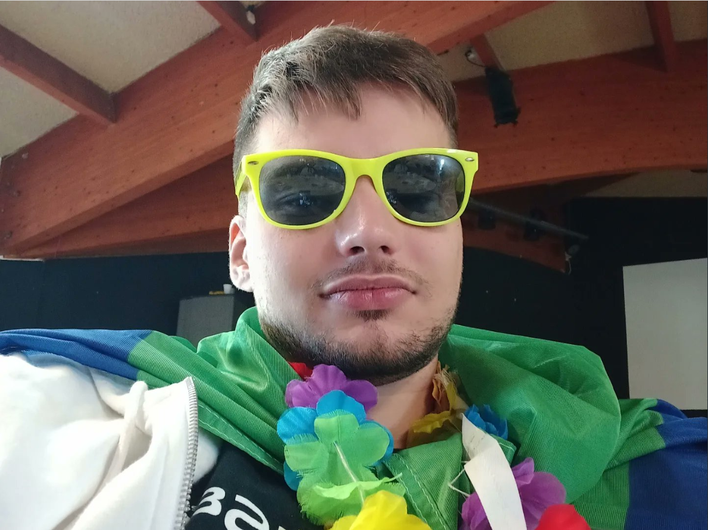
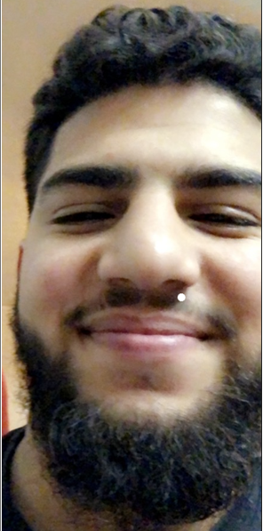

En tant qu'architecte logiciel, mon rôle est de fournir aux autres membres de l'équipe une structure fonctionnelle du programme.
Une fois les modules du programme identifiés, leurs interactions établies et les grandes fonctions identifiées,
nous pourrons transposer la théorie en ligne de code.
André Mihalic

architecte logiciel
Gabriel Delset
Responsable marketing
Lors de ce projet je me suis occupé (entre autre) de la partie marketing du projet,
je me suis donc occupé de la présentation de ce dit projet , ainsi que la conception des règles.
niveau code, j'ai eu à réaliser certaines fonctions dictées par andré , l'architecte logiciel,
et le site sur lequel vous pouvez lire cette description.
Le rôle de l’administrateur était de configurer un Acess Point Wi-Fi sur un raspberry pi4.
Un « server » accessible en SSH depuis n’importe qu’elle machine connectée au réseau du RPi4.
Le développement du programme à également était une partie importante du rôle.
Olivier Bernard
Administrateur
Cyprien Avicog
Scrum master
Le rôle de scrum master était d'organiser, gérer l’équipe et faire le lien avec le client.
J’ai effectué une fonction qui permet de récupérer la réponse de l’espion et qui valide s’il a donné le bon mot sinon il renvoi le mot correct
J’ai aussi fait la fonction qui permet récupérer question/réponses et renvoyer les renvoyer des utilisateurs
Enfin j’ai participer au site avec Gabriel.
Adnen Kadouri
marketing et code